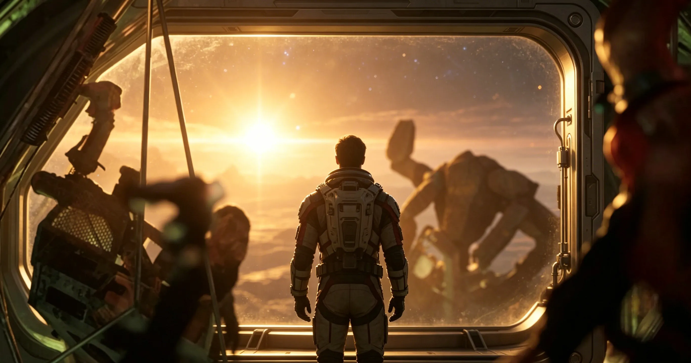

Spoiler warning: This page discusses the ending and major character choices.

Does Humanity Survive?
The ending strongly indicates that humanity gets the knowledge it needs. Grace's mission succeeds because the solution can be sent back, even though his personal route home changes.
Why Does Grace Stay on Erid?
Grace stays because the story has changed what survival means. At first, the mission is about saving Earth. By the end, it is also about refusing to abandon the friend and civilization that made survival possible.
What Rocky Means
Rocky is not a sidekick. He is the proof that intelligence, cooperation, grief, humor, and loyalty can cross biological distance. The friendship makes the book's science feel emotionally alive.
Grace's Emotional Arc
The ending completes Grace's movement from avoidance to responsibility. He does not become heroic because he is fearless. He becomes heroic because he finally chooses who needs him most.
Ending FAQ
It is bittersweet, but hopeful. Earth has a path to survival, Rocky lives, and Grace finds belonging in an unexpected place.
The ending leaves room for imagination, but it also works as a complete emotional resolution.
More to explore: Meet the characters, explore the science of PHM, or read fiction vs reality comparisons.